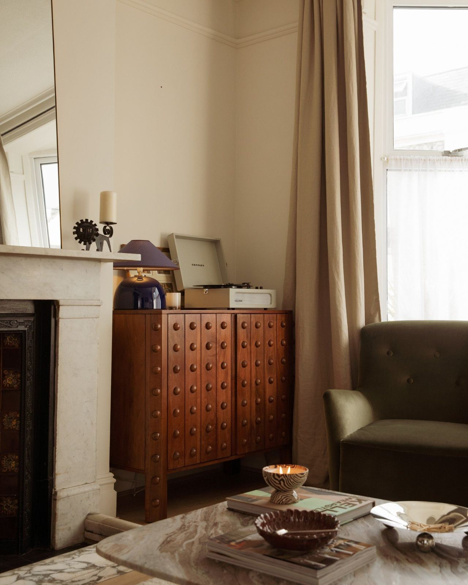

A characterful home of expressive colour, texture and pieces with personality, found, styled and shared.

I'm a content creator and photographer making interiors and lifestyle content for Instagram and TikTok. I create imagery and short-form video that shows products living naturally in a real home.
My home and lifestyle account follows our three-storey Victorian terrace in Dorset. We're mid-renovation, slowly transforming the rooms one by one.
Open to gifted collaborations and paid partnerships with homeware, furniture, design and lifestyle brands.